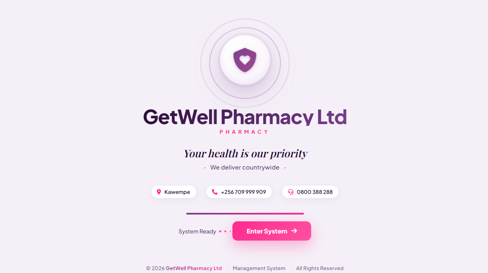

J
Java
Programming fundamentals & object-oriented concepts
I'm Larry Deville — a software engineering student who enjoys turning practical problems into clean, thoughtful digital experiences.
01 — A LITTLE ABOUT ME
I’m developing my skills in software engineering by learning the fundamentals, building projects, and improving with every iteration.
I’m especially interested in practical web applications, well-organised interfaces, and systems that make everyday work easier. I value clear thinking, steady improvement, and building things that people can actually use.
Follow my learning on GitHub ↗02 — MY TOOLKIT
Programming fundamentals & object-oriented concepts
Server-side web development
Web structure, styling & interaction
Programming practice & problem solving
Relational data & database foundations
Exploring mobile interfaces with XML
This is my current learning toolkit — skills grow through practice and real projects.
03 — SELECTED WORK
A selection of projects and ideas I’m developing. Each one is a chance to practise, solve a problem, and build something better.

A web-based pharmacy system concept focused on inventory, sales, suppliers, reporting, and role-based access — designed around practical pharmacy workflows.
Project details reflect the planned system scope; implementation status may vary.
A concept for helping students manage pocket money through a personal card and PIN, with parent top-ups and controlled access to funds at school.
A freelance technology and website design brand focused on helping people and businesses present their ideas online and explore practical digital solutions.
Project cards describe work and concepts shared by me. Public demos and source-code links will be added when available.
04 — HOW I WORK
Keep asking questions and learning how things work.
Turn lessons into practice instead of stopping at theory.
Make each version clearer, more useful, and more reliable.
05 — THE NEXT STEP
I’m open to connecting with developers, learning from other builders, and discussing practical digital projects.
LARRY DEVILLE · UGANDA